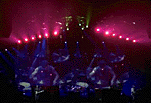

A Rush Of Excitement
by Catherine McHugh
Lighting Design -- March 1997
March 1997 -- Rush's LD Howard Ungerleider has been working with the Canadian
power trio (lead singer/bassist Geddy Lee, drummer Neil Peart and guitarist
Alex Lifeson) for 23 years, so perhaps you can't quite blame the fans who
sometimes mistake him for a touring band member. "I think the audience thinks
that the band triggers the lights themselves," Ungerleider says, laughing.
"They think I'm playing keyboards, or doing sound. Someone's always telling
me to turn it up."
 While Ungerleider left the sound levels to the band's veteran FOH
engineer Robert Scovill, he did raise the level of visual technology for
this latest tour, Test for Echo, which shares the name of the group's
16th studio album. "I personally wanted this tour to look a lot
different than the shows have in the past. This is the first time I'm using
almost all computer lights and very few conventionals," Ungerleider says.
"Basically the band came to and said they wanted something really powerful.
What they really said was: 'Just do what you do best.' They've always
trusted me with the lighting design."
While Ungerleider left the sound levels to the band's veteran FOH
engineer Robert Scovill, he did raise the level of visual technology for
this latest tour, Test for Echo, which shares the name of the group's
16th studio album. "I personally wanted this tour to look a lot
different than the shows have in the past. This is the first time I'm using
almost all computer lights and very few conventionals," Ungerleider says.
"Basically the band came to and said they wanted something really powerful.
What they really said was: 'Just do what you do best.' They've always
trusted me with the lighting design."
The lighting system was supplied by See Factor Industry Inc., the main
lighting contractor, and Vari-Lite. High End Systems and Vari-Lite equipment
includes 48 [High End Systems] Cyberlight automated luminaires, 48 [High End
Systems] Studio Color automated luminaires, 12 VL6 automated luminaires;
the conventional equipment is 30 MR-16 strips, 60 ACL color changers, and
12 5c Berkeys. "That's pretty much the whole system," Ungerleider says. "I
chose the fixtures that I did because of road-testing them and knowing what
they can do."
The LD had road-tested the Cyberlights on Queensryche's 1995 tour
("They work so well from way up high and I was impressed with their
reliability"), but this is the first time he has used the Studio Colors. "It's
just so amazing and so bright -- it's incredible. It was very, very pleasant to
use this light source on this tour," Ungerleider says. "And I run them
through their paces, too, with all the coloring and the strobe effects -- and
running the strobes simultaneously. Their R&D department was
freaked out after seeing the show."
For the rig's structural layout the LD went back to his design for the 1981
Moving Pictures tour. "I had the three pods custom-made, but
for that tour they were packed with conventional lights--PAR-56s, PAR-64s
and lekos," explains the LD. "I have a warehouse of material I haven't used
in years, so I thought it would be really cool to bring them back, but this
time load them up with technology: new automated fixtures and pentographs
inside with a VL6 on the end of each."
The LD explains that he chose the VL6s for a very specific reason.
"They're interesting because we're using them with the DMX
capability. That light has a feature when you don't run them through an
Artisan console, which is a bad DMX feature -- but it's great," Ungerleider
says. "It starts shaking and that makes it look almost as if it's animated.
There's no other light that really can do that, and I really enjoy that
effect. I also like a lot of the VL6's gobo patterns. As much as I chose the
High End Systems products I needed to do the job, I feel that certain lights
have certain uses. That's why I really wanted to incorporate Vari-Lites
into the show."

The LD then added a few extra trusses to create asymmetrical elements. "I
liked the angles, so I wanted to create contours. I'm very big on creating
different levels of lighting by choosing lights from different areas and
mixing and matching the levels," Ungerleider says. "It does make a little bit
of light seem like a lot of light, and it adds to the sense of depth
perception as well when you're creating walls of light with different modes
and different angles. And, if you use the right colors properly with the
floor lighting, it looks like you're looking down about 30' down the back of
the stage when it's really only 10'."
The band is currently taking a break, but plans to hit the road (and the
aforementioned sheds) again this spring. Ungerleider can hardly wait. "I
really appreciate all these new companies coming out with all these new
lights, which give people like myself more opportunity to be creative and to
do a lot more out here. It makes my job a lot more fun."
 While Ungerleider left the sound levels to the band's veteran FOH
engineer Robert Scovill, he did raise the level of visual technology for
this latest tour, Test for Echo, which shares the name of the group's
16th studio album. "I personally wanted this tour to look a lot
different than the shows have in the past. This is the first time I'm using
almost all computer lights and very few conventionals," Ungerleider says.
"Basically the band came to and said they wanted something really powerful.
What they really said was: 'Just do what you do best.' They've always
trusted me with the lighting design."
While Ungerleider left the sound levels to the band's veteran FOH
engineer Robert Scovill, he did raise the level of visual technology for
this latest tour, Test for Echo, which shares the name of the group's
16th studio album. "I personally wanted this tour to look a lot
different than the shows have in the past. This is the first time I'm using
almost all computer lights and very few conventionals," Ungerleider says.
"Basically the band came to and said they wanted something really powerful.
What they really said was: 'Just do what you do best.' They've always
trusted me with the lighting design." {kind=link}